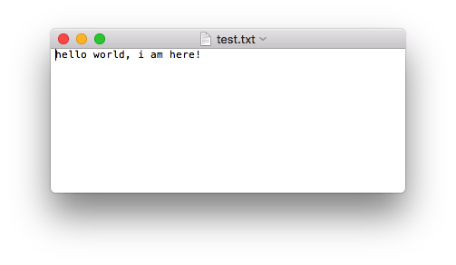
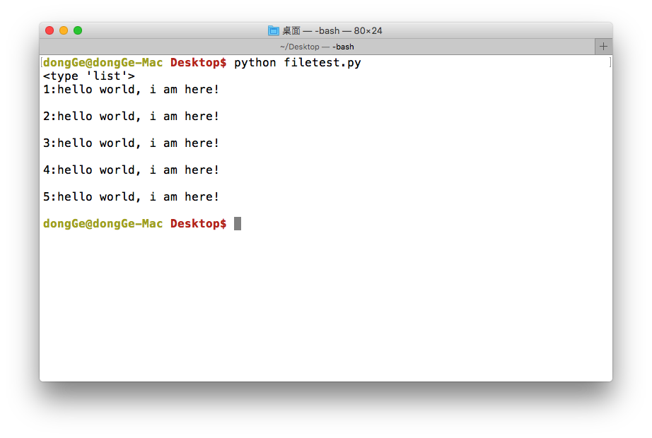
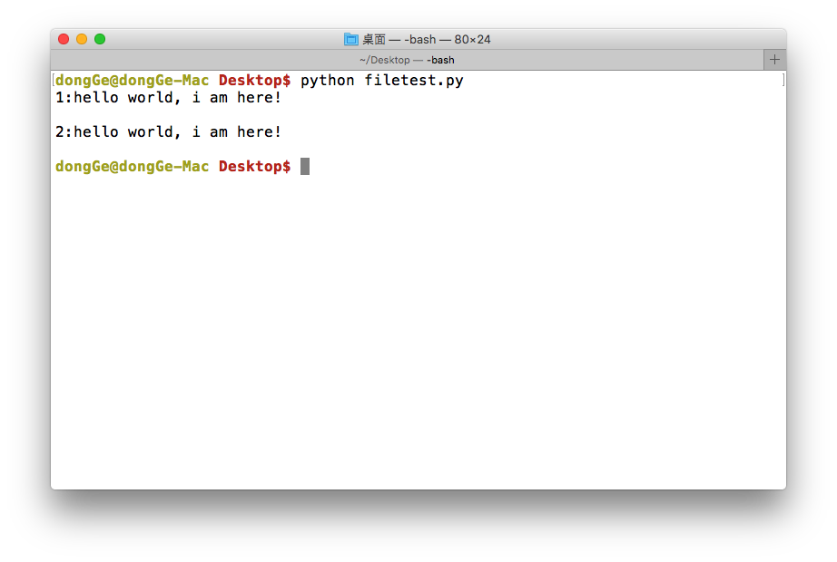
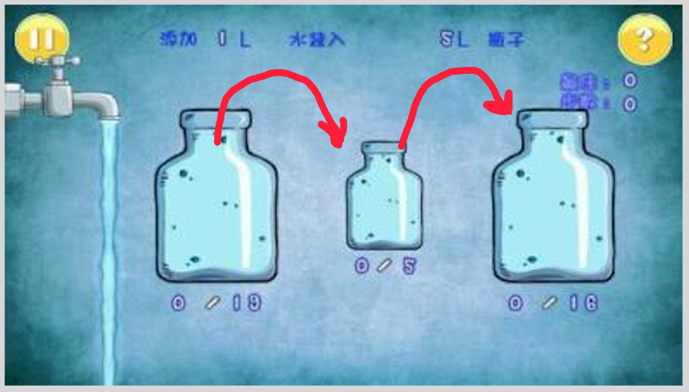

文件的读写
<1>写数据(write)
使用write()可以完成向文件写入数据
demo: 新建一个文件 file_write_test.py,向其中写入如下代码:
f = open('test.txt', 'w')
f.write('hello world, i am here!')
f.close()
运行之后会在file_write_test.py文件所在的路径中创建一个文件test.txt,其中数据如下:

注意：
- 如果文件不存在那么创建，如果存在那么就先清空，然后写入数据
<2>读数据(read)
使用read(num)可以从文件中读取数据，num表示要从文件中读取的数据的长度（单位是字节），如果没有传入num，那么就表示读取文件中所有的数据
demo: 新建一个文件file_read_test.py，向其中写入如下代码:
f = open('test.txt', 'r')
content = f.read(5) # 最多读取5个数据
print(content)
print("-"*30) # 分割线，用来测试
content = f.read() # 从上次读取的位置继续读取剩下的所有的数据
print(content)
f.close() # 关闭文件，这个可以是个好习惯哦
运行现象：
hello
------------------------------
world, i am here!
注意：
- 如果用open打开文件时，如果使用的"r"，那么可以省略，即只写
open('test.txt')
<3>读数据（readlines）
就像read没有参数时一样，readlines可以按照行的方式把整个文件中的内容进行一次性读取，并且返回的是一个列表，其中每一行的数据为一个元素
#coding=utf-8
f = open('test.txt', 'r')
content = f.readlines()
print(type(content))
i=1
for temp in content:
print("%d:%s" % (i, temp))
i += 1
f.close()
运行现象：

<4>读数据（readline）
#coding=utf-8
f = open('test.txt', 'r')
content = f.readline()
print("1:%s" % content)
content = f.readline()
print("2:%s" % content)
f.close()

想一想：
如果一个文件很大，比如5G，试想应该怎样把文件的数据读取到内存然后进行处理呢？
